Buttons, check boxes, radio buttons
Pressed uses setDown(true); Toggled is a checked checkable button.
- JulienMaille Pressed buttons fill with the highlight color and toggled buttons get a light tint. The partial check box is a filled square. The icon on 'With icon' is blurry at 2× scaling.
- cristianadam Same as the original.
- VICUS Fluent-like look: larger corner radius, the default button marked by an accent ring, Pressed and Toggled only slightly darker. Check boxes and radio buttons are filled with the accent color, and state changes are animated.
- jcelerier Flat buttons. In the light palette, checked check boxes and radio buttons are nearly invisible and the Pressed label is hard to read.
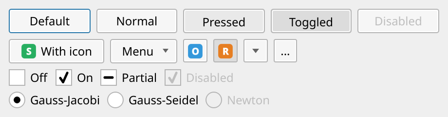
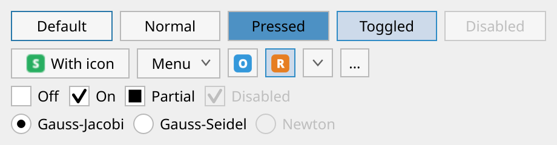
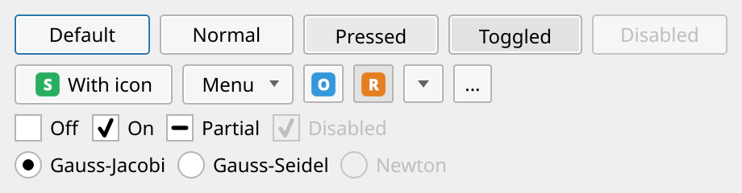
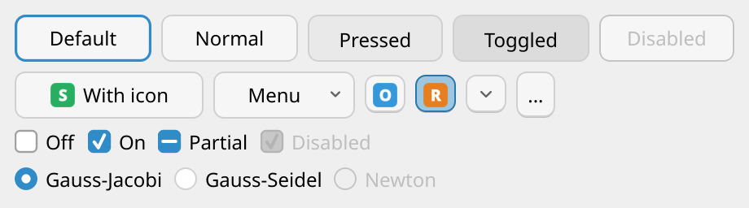
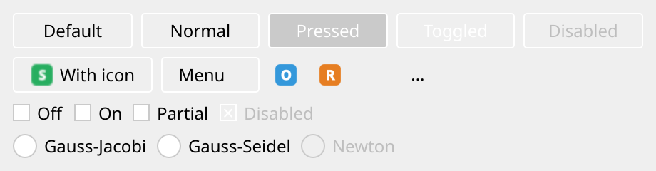
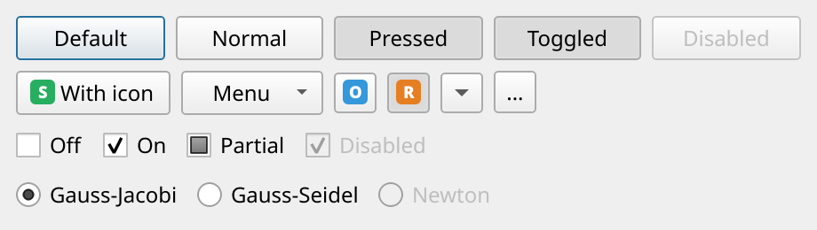
Line edits, combo boxes, spin boxes
- JulienMaille Chevron arrows on combo boxes and spin boxes.
- cristianadam Same as the original.
- VICUS Rounded fields with chevron arrows; spin box arrows stacked in one column.
- jcelerier Combo boxes use the line-edit background, and the arrows are lighter.
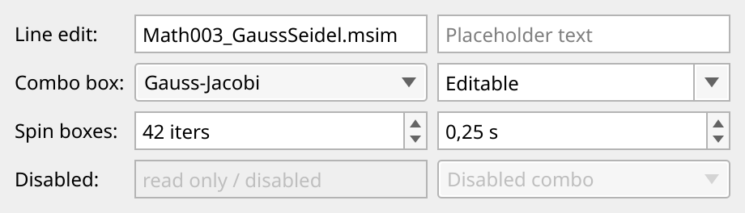
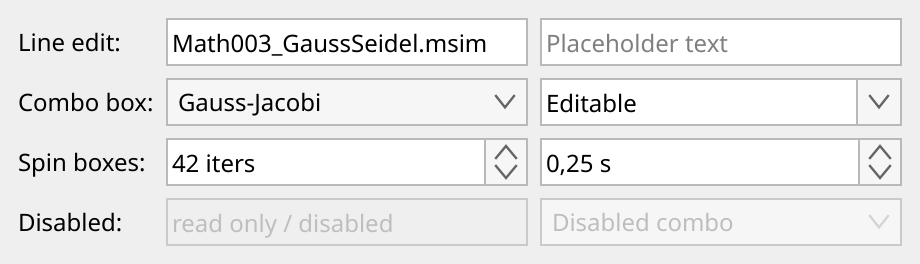
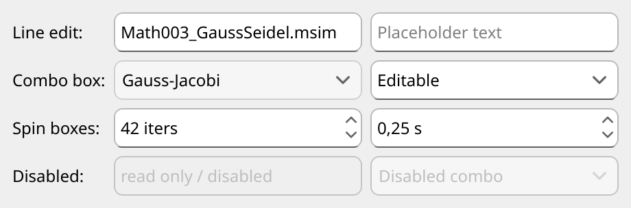
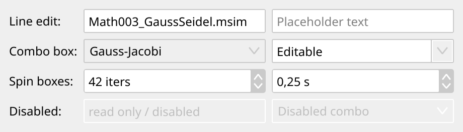
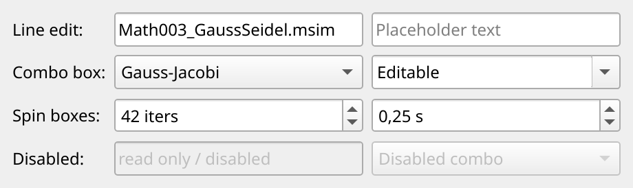
Sliders, progress bars, scroll bars
The second progress bar is indeterminate (busy), captured as a single frame.
- JulienMaille The slider groove fills with the highlight color up to the handle. Thin scroll bars without arrow buttons. The busy bar is animated.
- cristianadam Thin scroll bars without arrow buttons; sliders unchanged.
- VICUS Accent-filled slider track with ring handles and stronger ticks, rounded progress bars, overlay scroll bars that widen on hover. Scroll bars outside a scroll area paint no background (the white strips in the dark screenshot); inside views this does not happen. The busy bar is animated and was captured near the start.
- jcelerier Classic scroll bars with a lighter handle.
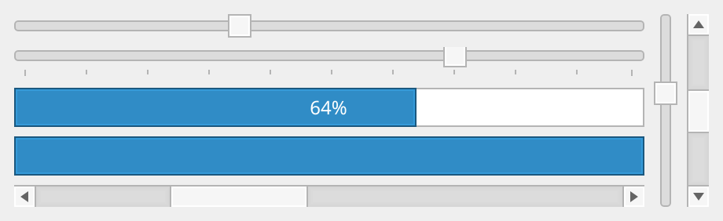
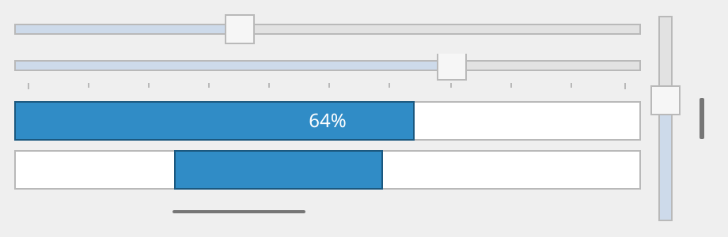
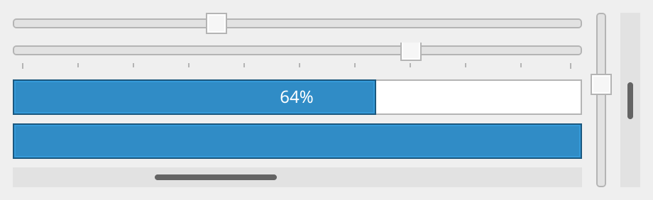
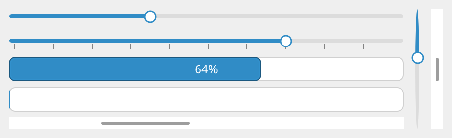
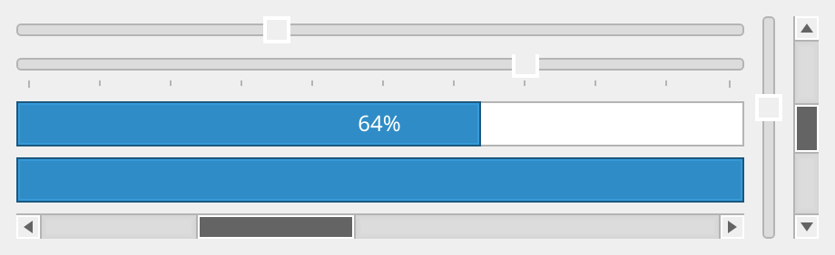
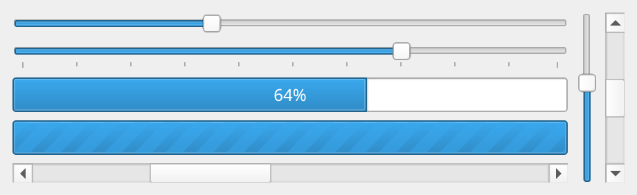
Tabs and group boxes
'Output' is a checkable group box (checked); the Simulation tab is disabled.
- JulienMaille Group box titles sit on the frame line (Windows style). Blue highlight bar on the active tab.
- cristianadam The same blue highlight bar on the active tab; group boxes unchanged.
- VICUS Underline tabs: no tab borders and no frame around the page, with an accent bar under the active tab. Group boxes have rounded frames.
- jcelerier The checkable group box looks unchecked in the light palette.
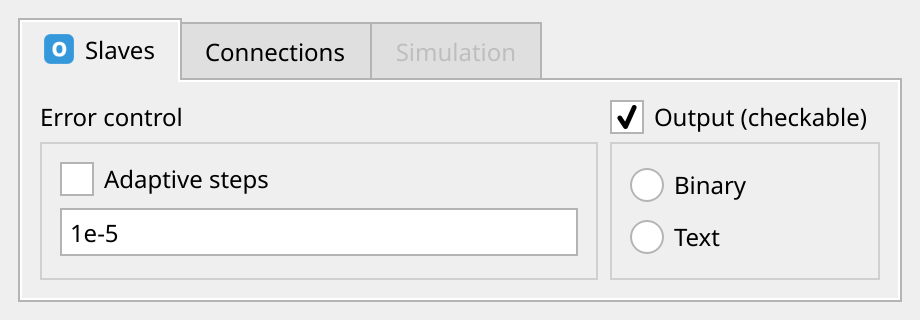
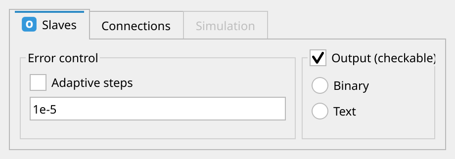
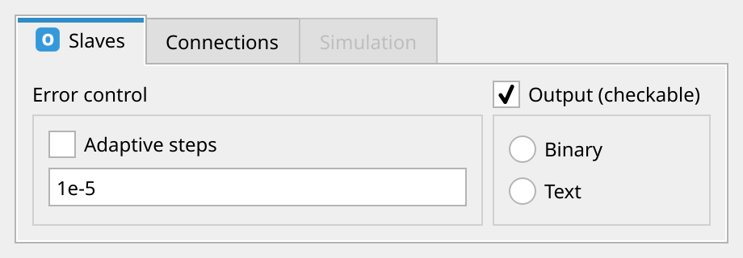
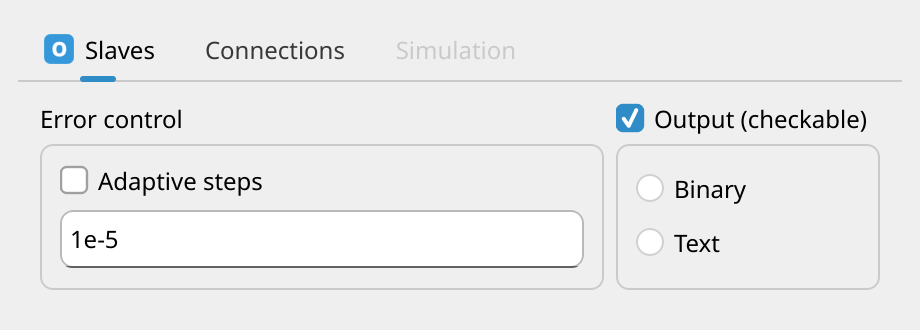
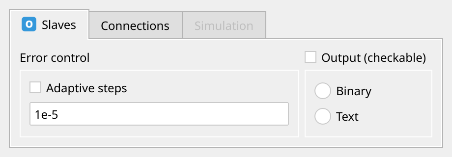
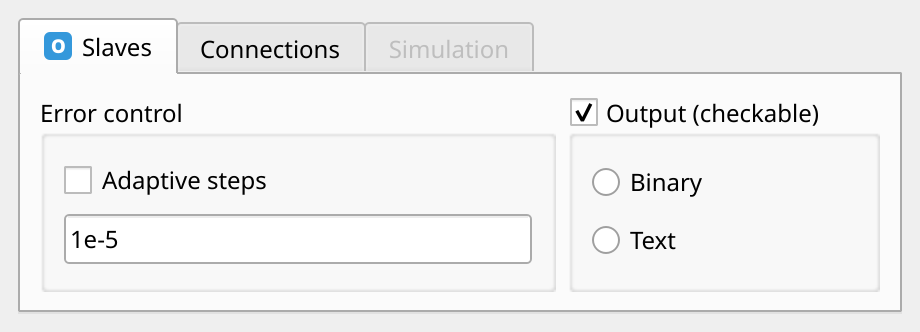
Tree and table views
Tree items have check boxes (x1 is checked and selected). The table is sorted by Output.
- Original In the dark palette, the unchecked item check boxes almost disappear.
- JulienMaille Chevron branch arrows. The sort indicator sits above the header text.
- cristianadam Chevron branch arrows, taller rows, clearly drawn item check boxes.
- VICUS Rounded view frames. The selection is a soft accent tint with a short accent bar at the start of the row. Accent-filled item check boxes, chevron arrows.
- jcelerier Checked item check boxes are drawn as a cross.
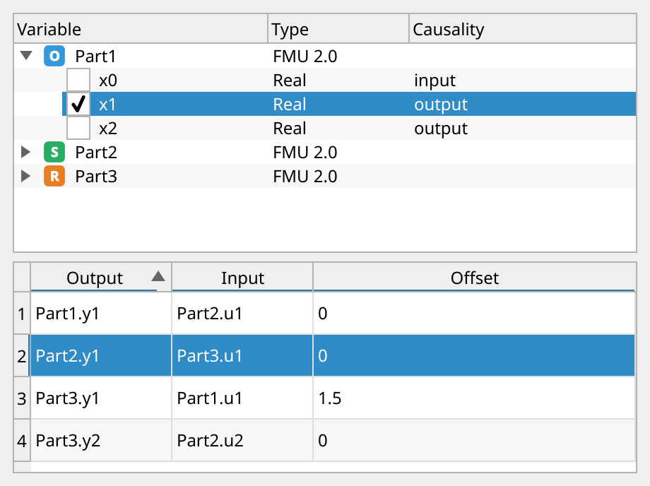
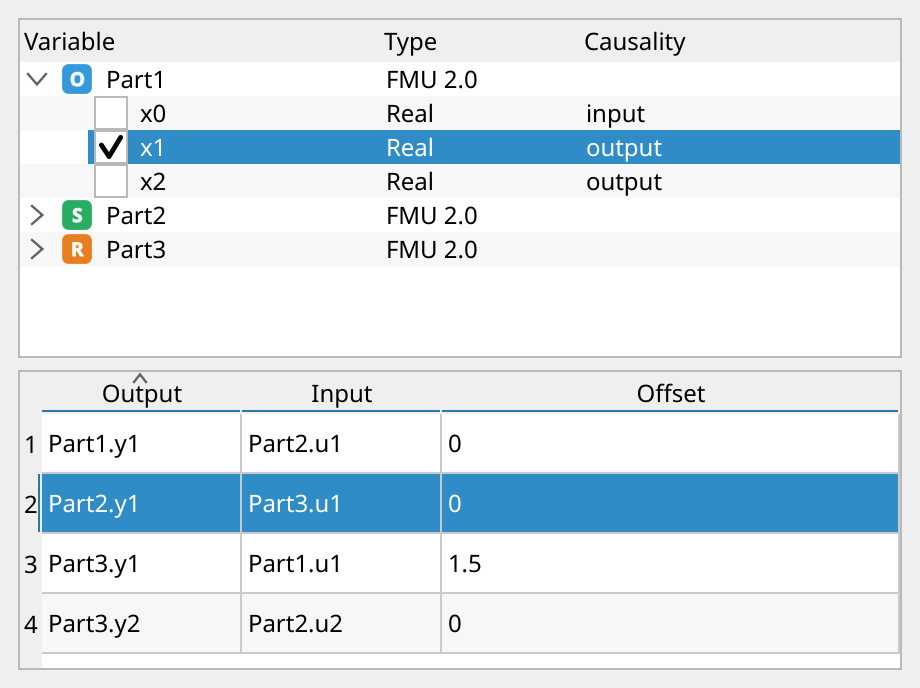
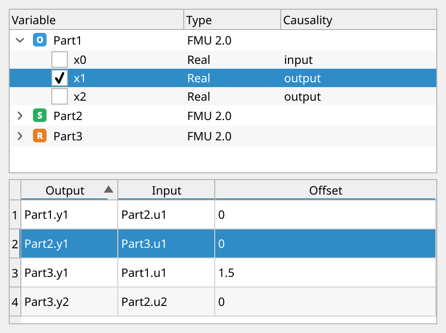
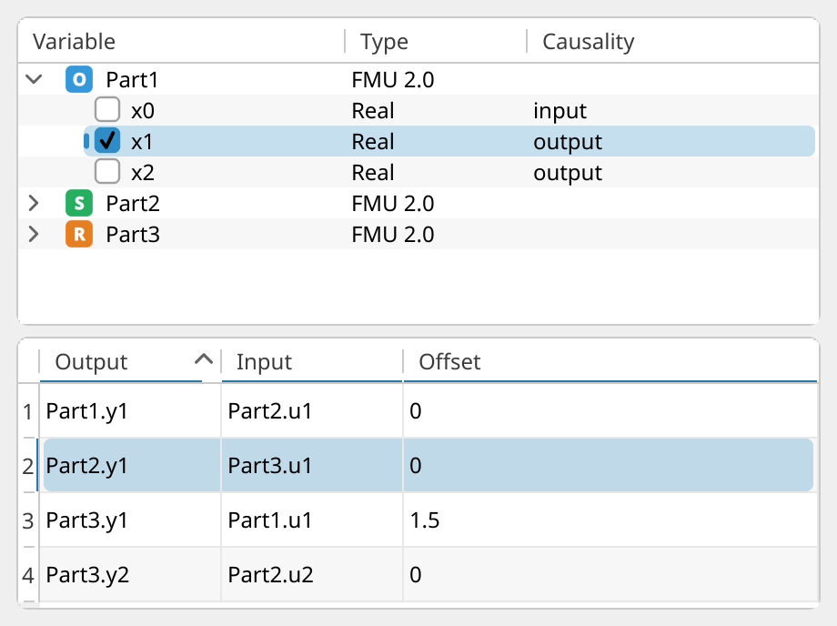
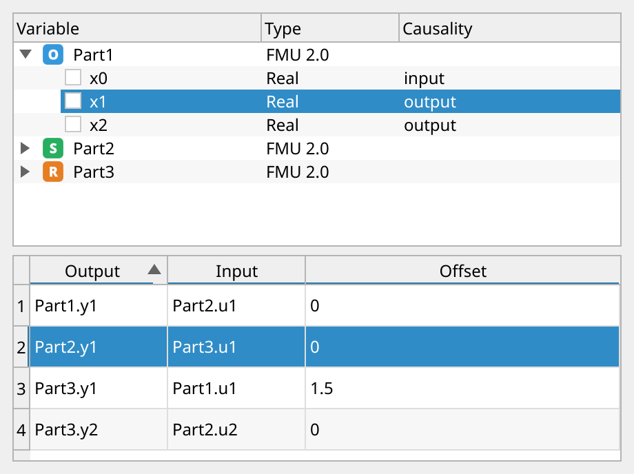
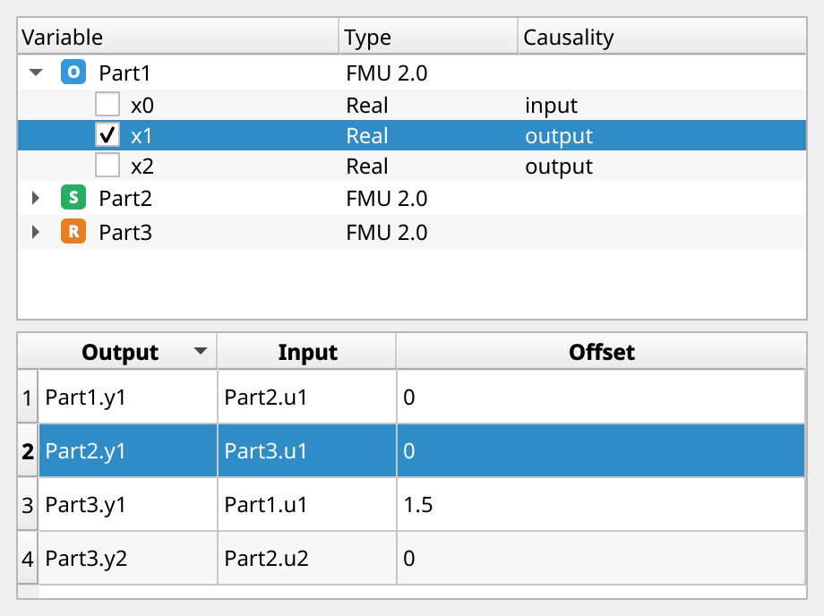